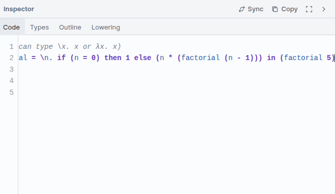
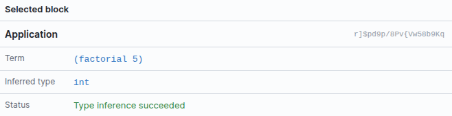

Your first lambda term
The whole language is three constructs — a variable, an abstraction, an application. Everything else in the toolbox is a convenience built on top of them. This chapter builds each one, then shows you the shortcut for when dragging blocks is slower than typing.
Your first term
Open B-Lambda on an empty workspace and build the identity function:
- From the Abstraction category, drag
λ x . bodyonto the workspace. - Click the
xfield and name the parameter, or leave it asx. - From Variables, drag
λ x . xinto the body socket. This block is a variable reference, not a new binder — set its field to the same name,x.
The Inspector's Code tab now reads lambda x. x and the Types tab
reports 'a -> 'a. That type variable is the point: nothing in the term constrains
what x is, so the identity function works at every type. See
let-polymorphism.
A variable block whose name matches an enclosing binder renders as bound and picks up that binder's type. A name with no enclosing binder stays free, and inference gives it a fresh type variable. The label on the block tells you which it is, so you can spot an accidental typo in a parameter name by eye.
Applying a function
Application is its own block, from the Application category. It has two sockets,
function and arg — drawn on the block as func · arg
because in the λ-calculus application is just juxtaposition, with no syntax of its own.
Also in that category is ( term ), labelled grouping. It changes nothing about
evaluation; it exists so that generated text and printed derivations bracket the way you meant.
Application associates to the left, so f g h means (f g) h; wrap the
argument in a grouping block when you want f (g h).
let and letrec
The Let Binding category has two blocks, and the difference between them matters:
| Block | Reads | Use it when |
|---|---|---|
| ≔ let | let x = … in … |
The bound value does not refer to itself. Generalised, so it is polymorphic. |
| ↻ letrec | letrec f = … in … |
The bound value calls itself. Inferred monomorphically. |
Recursion needs letrec: inside a plain let, the name being bound is not yet
in scope on the right-hand side, so a self-reference would be a free variable. The
Factorial 5 example is the canonical shape:
letrec factorial = λn. if (n = 0) then 1 else (n * (factorial (n - 1)))
in (factorial 5)Generalising a binding while you are still inferring its own body is unsound in general, so
letrec types its binding at a single type. In practice this is enough for the
recursive functions you would write here — factorial, Fibonacci, GCD are all
monomorphic. A polymorphic recursive function would need a type annotation, and
B-Lambda has no annotation syntax.
Typing text instead
The Inspector's Code tab is editable, and it is often the faster way in. Type a term as text, press Sync, and B-Lambda parses it and rebuilds the workspace as blocks.

Both spellings of the binder are accepted, so you do not have to hunt for a λ on your keyboard:
\x. x -- backslash
λx. x -- the real thing
lambda x. x -- also fineThe traffic goes both ways. Editing blocks regenerates the text (the panel footer confirms Synchronized from workspace); editing the text and syncing regenerates the blocks. If a term will not parse, the workspace is left alone rather than half-rebuilt.
Running the program
Run in the workspace title bar evaluates the whole program and puts the result on the bottom panel's Output tab. For anything more detailed than a final answer — seeing the reduction happen, or stepping a machine — use the Semantics dock instead.
Every term block also carries a Blockly comment icon. Open it for a small report: the block's kind, its inferred type, its reduced value, and any local type problems. More → Add Type Comments refreshes all of them at once.

Reading the status bar
Left to right along the bottom edge:
- File name —
Untitled workspace, or the.blcyou loaded. - Blocks — how many blocks the workspace holds. A useful sanity check: the Factorial 5 example is 17.
- Problems — the type-error count, mirroring the Problems tab.
- Autosave — Autosave pending or Saved locally with a time.
- Perspective — the current layout preset, or Custom.